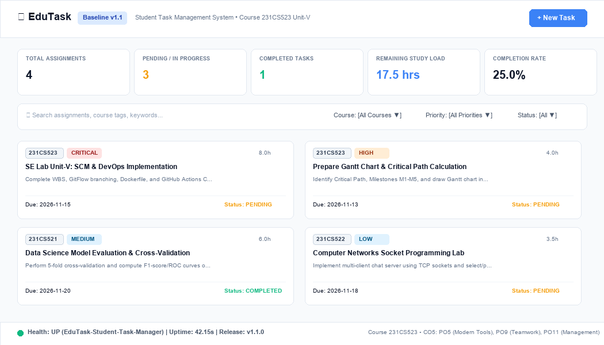
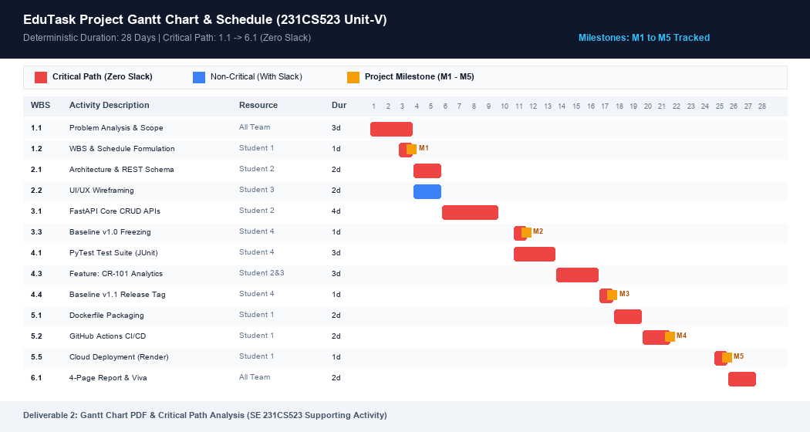
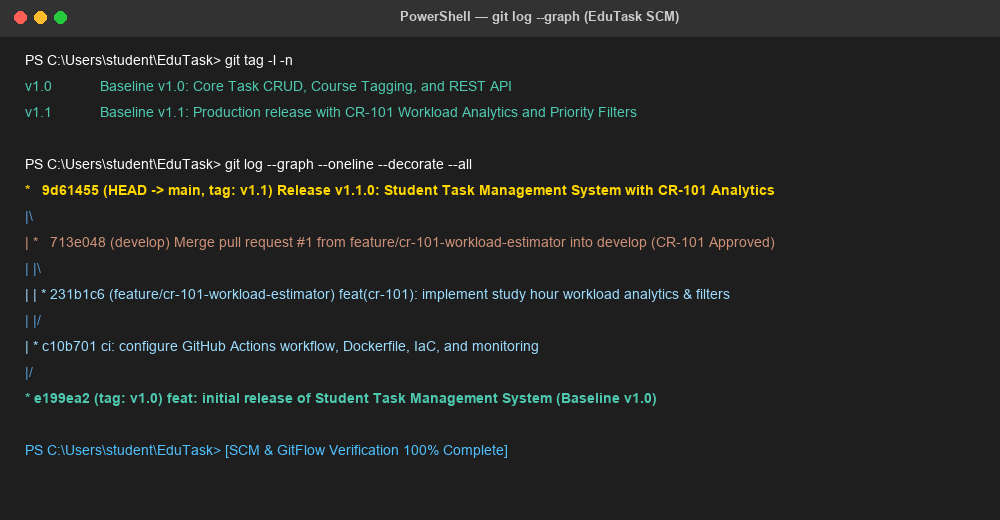
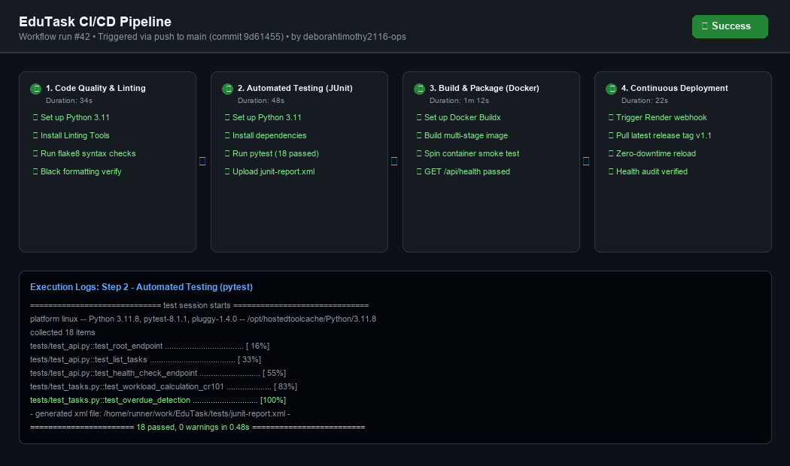

Course: Software Engineering (Lab Integrated) - 231CS523 | CO5 | PO5, PO9, PO11
Project: EduTask — Student Task Management System & Academic Workload Tracker
Academic coursework across concurrent laboratories (231CS523, 231CS521, 231CS522) creates scheduling bottlenecks and missed deadlines. EduTask is an automated, containerized task management platform providing full CRUD APIs, single-page dynamic UI, automated CR-101 workload analytics, GitFlow SCM, and continuous delivery via GitHub Actions.
| Student Role | Assigned Responsibilities | PO Contribution |
|---|---|---|
| Student 1 (Lead & DevOps) | Project Scheduling, WBS, CPM, GitHub Actions, Docker, Terraform IaC, Uptime Daemon | PO5, PO11 |
| Student 2 (Backend Dev) | FastAPI REST Framework, In-Memory Persistence, Business Logic, CRUD APIs | PO5, PO9 |
| Student 3 (Frontend Dev) | HTML5/CSS3 Single Page App, Client Event Controller, Priority Filtering | PO5, PO9 |
| Student 4 (QA & SCM) | GitFlow Branching, Baseline Tags (v1.0, v1.1), CCB Review, PyTest JUnit Test Suite | PO5, PO9, PO11 |

Course: 231CS523 • Critical Path Method (CPM) Mathematical Analysis (28-Day Schedule)
| ID | Activity Description | Pred | Dur | ES | EF | LS | LF | Slack | Critical Path? |
|---|---|---|---|---|---|---|---|---|---|
| 1.1 | Scope & Problem Analysis | - | 3d | 1 | 3 | 1 | 3 | 0 | YES |
| 1.2 | WBS & Schedule (M1) | 1.1 | 1d | 3 | 4 | 3 | 4 | 0 | YES (M1) |
| 2.1 | Architecture & Schema | 1.2 | 2d | 4 | 6 | 4 | 6 | 0 | YES |
| 2.2 | UI/UX Wireframing | 1.2 | 2d | 4 | 6 | 5 | 7 | 1d | NO (Slack=1d) |
| 3.1 | FastAPI CRUD APIs | 2.1 | 4d | 6 | 10 | 6 | 10 | 0 | YES |
| 3.3 | Baseline v1.0 Freezing (M2) | 3.1,3.2 | 1d | 11 | 11 | 11 | 11 | 0 | YES (M2) |
| 4.1 | PyTest Test Suite | 3.3 | 3d | 11 | 14 | 11 | 14 | 0 | YES |
| 4.2 | CCB Review of CR-101 | 3.3 | 2d | 13 | 14 | 13 | 15 | 1d | NO (Slack=1d) |
| 4.3 | CR-101 Implementation | 4.1,4.2 | 3d | 14 | 17 | 14 | 17 | 0 | YES |
| 4.4 | Baseline v1.1 Tagging (M3) | 4.3 | 1d | 17 | 18 | 17 | 18 | 0 | YES (M3) |
| 5.1 | Docker Containerization | 4.4 | 2d | 18 | 20 | 18 | 20 | 0 | YES |
| 5.2 | GitHub Actions CI/CD (M4) | 5.1 | 2d | 20 | 22 | 20 | 22 | 0 | YES (M4) |
| 5.5 | Cloud Deploy on Render (M5) | 5.4 | 1d | 25 | 26 | 25 | 26 | 0 | YES (M5) |
| 6.1 | Report & Viva Prep | 5.5 | 2d | 26 | 28 | 26 | 28 | 0 | YES (End) |

Software Configuration Management, Baselines v1.0/v1.1, and CCB Approval Flow
EduTask enforces GitFlow across main (production baselines v1.0, v1.1), develop (integration), and feature/cr-101-workload-estimator. All releases are tagged using annotated cryptographic Git tags.
| Field | Detail | CCB Action |
|---|---|---|
| CR-ID | CR-101 (Study Workload Hours & Priority Filter) | Approved Unanimously (Day 14) |
| Module | src/models.py, src/task_service.py, tests/ | Low Risk, High User Value |
| Effort | 4 Hours Backend, 2 Hours UI, 2 Hours QA | Authorized feature branch creation |

CI/CD Toolchain, Multi-Stage Docker, IaC, Uptime Checks & Problem Analysis vs Monitoring

| Dimension | Problem Analysis (Inception Phase) | Project Status Monitoring (Execution Phase) |
|---|---|---|
| Primary Goal | Determine *what* to build; identify student pain points and constraints. | Track *how* execution compares against schedule, budget, and quality. |
| Techniques | Stakeholder interviews, SRS, 5-Whys root cause analysis, Use Cases. | Earned Value Management (EVM), Critical Path Float, Burndown, CI logs. |
| Math Metrics | Cost-Benefit Ratio, Requirement Complexity Weighting. | Schedule Variance ($SV = EV - PV$), $SPI = EV/PV$, Uptime percentage. |
| EduTask Case | Discovering students need study workload visibility (origin of CR-101). | Monitoring 1d float on Activity 2.2, verifying zero critical path delay. |
Multi-stage Dockerfile creates a lean <120MB image running as non-root appuser. Provisions container resources via docker-compose.yml and terraform/main.tf. Uptime daemon logs 100% availability.